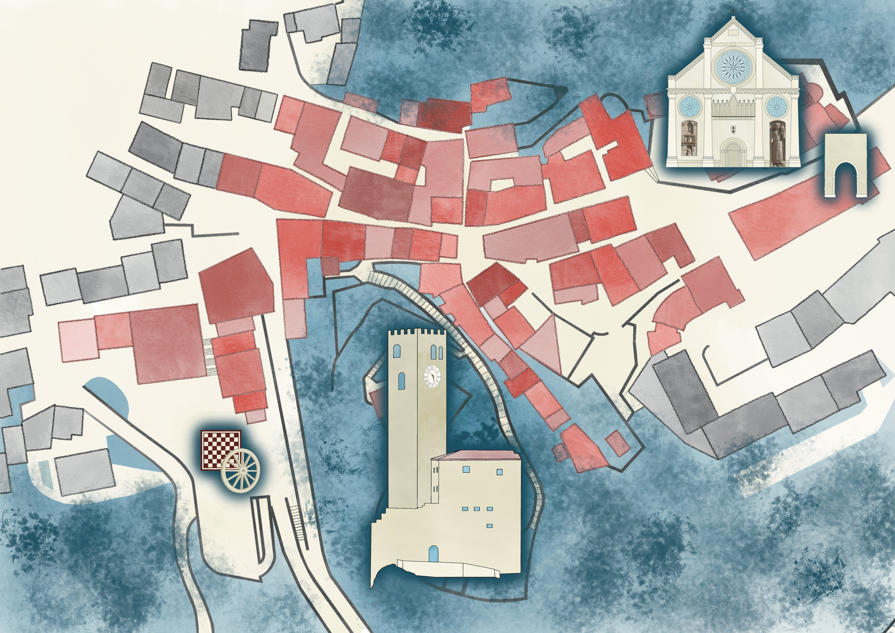

Luoghi della Festa
❶ Antro et Locanda de lo Duomo
❷ Cort dal Diaul
❸ Cervogeria de lo Eretico
❹ Taberna de lo Rospo
❺ Porta Paninorum
❻ Taberna Pane et Salamen
Eventi e Attrazioni
★ Incendio del Campanile
🏁 Palio / Dama Vivente
⛓ Antro delle Torture
⛺ Accampamento
🌙 Salita delle Cartomanti
👑 Cortile dei Nobili
🧺 Mercati
Servizi
💰 Cambio Monete
ⓘ Infopoint / WC
⚔ Salvacondotto

×